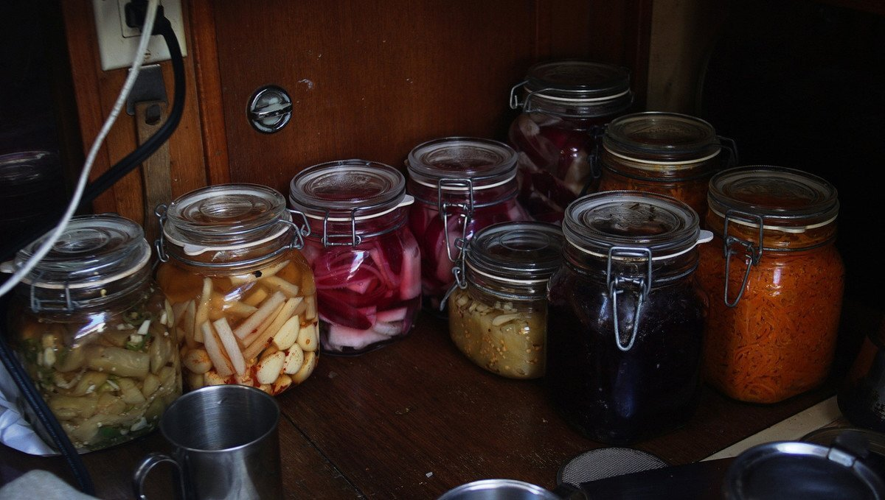
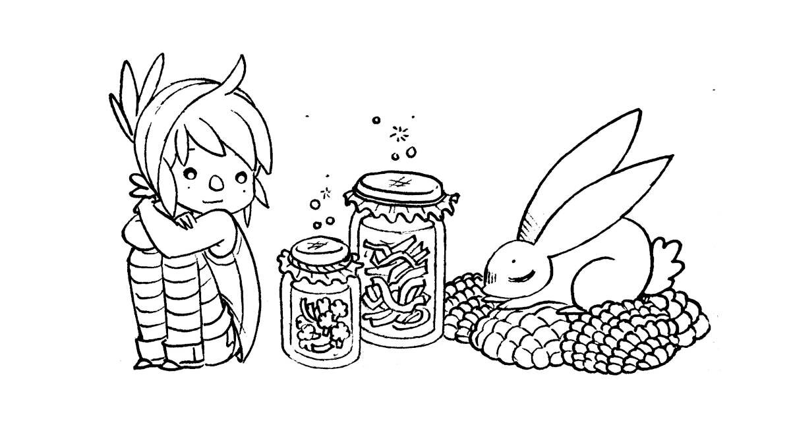
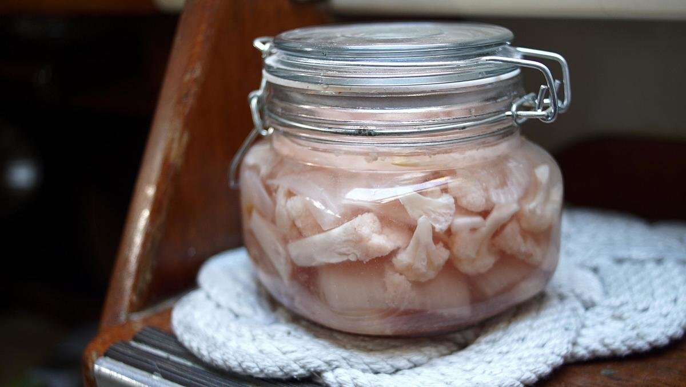

lactofermentation
We preserve food whenever possible. Preserving food by lacto-fermentation keeps vitamins intact, and in some vegetables, increases its nutritional value. Fermentation improves the immune system, and digestibility of the food, bacteria labor day and night to pre-digest them, making them easier for our systems to assimilate. It's a time-proven, and very underappreciated process.
Preserving food by fermentation is like taking the time to build a small community, in which we invite the microbes we want and don't let in the ones we don't.
You don’t need to be an expert to preserve food, or any fancy technology. Just a container, some salt, and trust in the world of bacteria and fungi.
— A. Vansintjan, 2017.
Lacto-fermentation on a boat helps in saving fuel, and to prolong the shelf life of perishable foods. A sailor who pickles vegetables will be able to prepare elaborate meals with complex flavors and nutrients quickly. Unlike canned foods, lacto-fermented foods are alive, and will keep you healthy on long ocean passages.
Lacto-fermentation, or fermenting by lactic acid, requires only fresh vegetables, salt, and water. All vegetables can be fermented. Microbial activity occurs which secrete lactic acid, co2 and a variety of enzymes. Lactic acid inhibits the growth of bad bacteria. The mixture eventually achieves a state of balance, and fermentation stops. Conserving vegetables this way can last many years, even when stored at room temperature. Lacto-fermentation is very safe, the PH of the mixture is so low (below 5) that no pathogens can survive.
We make sauerkraut, kimchi and other pickled vegetables (carrots, beet root, garlic etc).
Salt essentially slows fermentation and enzyme activity and thereby prolongs preservation potential. Temperature also impacts upon the speed of fermentation (fermentation occurs faster in summer than in the winter). If we preserve vegetables with the goal of eating them much later, we add more salt, if the goal is to eat it as soon as it's ready, we use less.
Our favorite jar type is the spring-top variety with the rubber seal. If under pressure, the jar will 'burp' itself without letting air inside. It is necessary to oil the metal rings so they don't rust.
View our complete guide to lacto-fermenting vegetables on our cooking website Grimgrains.